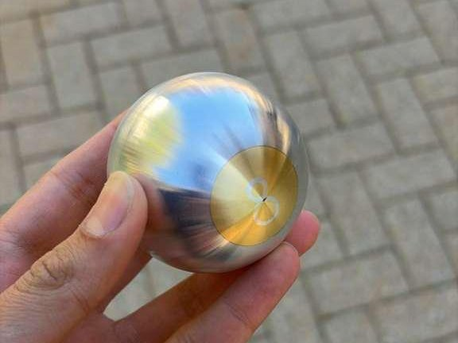
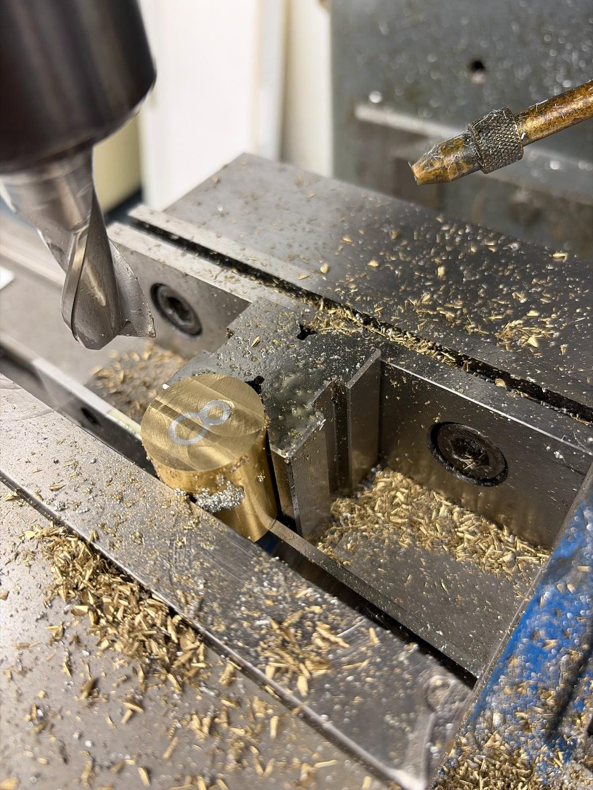
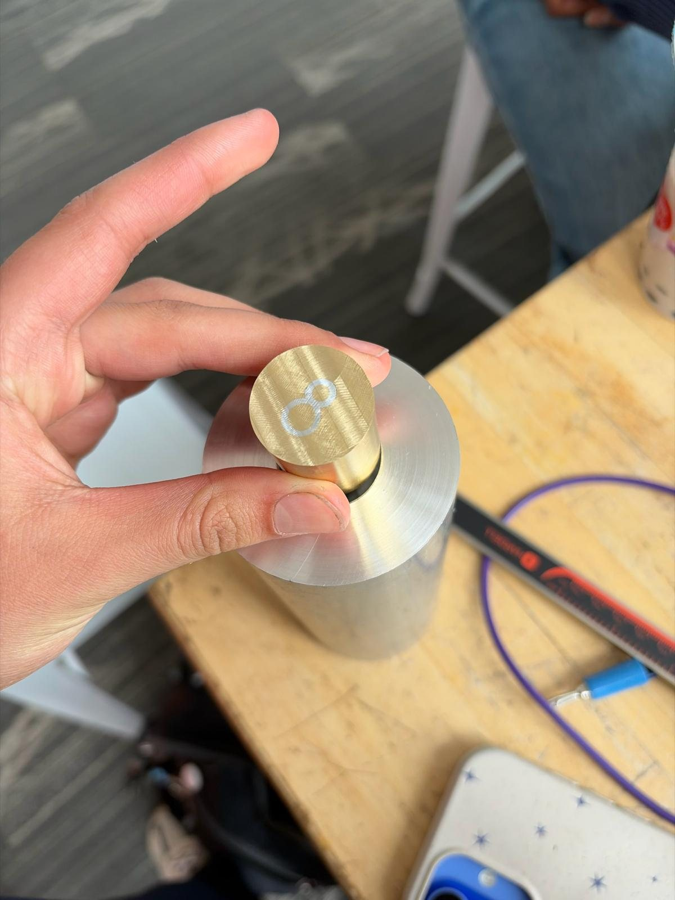
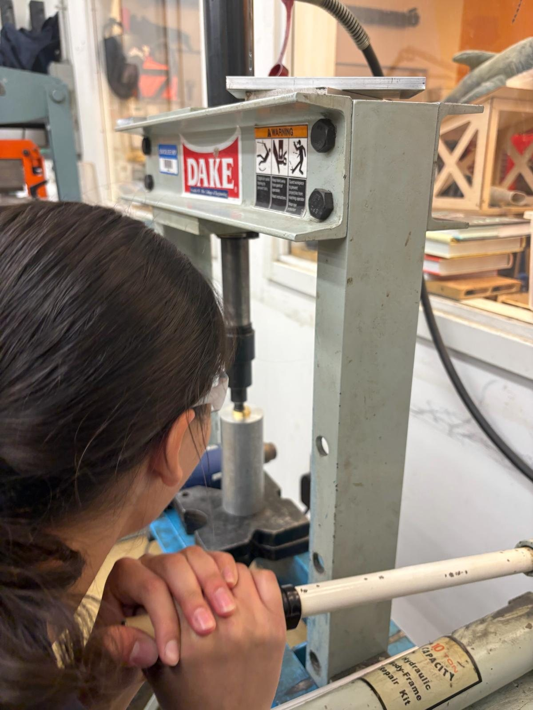
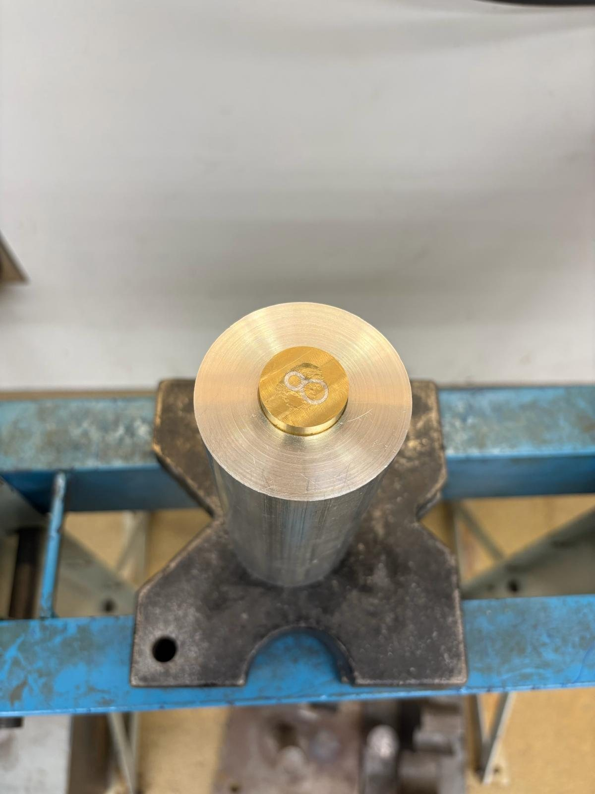
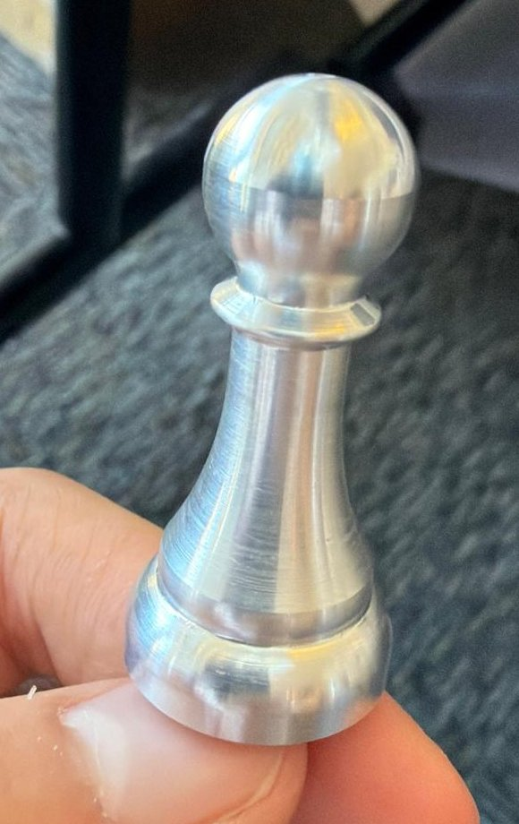

Machining & Fabrication
Machining custom parts for precise engineering purposes and decorative pieces.
[TODO: 1–2 sentences on what you enjoy about machining and where you learned it.]
Baja SAE parts
For Olin Baja SAE, I machined the wheel hub and a fork bushing housing on the manual and CNC mill, programming the toolpaths in Fusion CAM.


8 ball
An aluminum ball with a brass figure 8 inlaid in its face, built from several press-fit parts. The project taught me about different fit types and tolerancing: I used micrometers and fit tables to work out each fit.
The figure 8 is made from the inside out. I turned down two small brass cylinders for the centers of the 8's loops on the lathe, and turned and drilled two aluminum tubes for its outlines. I pressed the small brass cylinders into the aluminum tubes using a vise. Then I drilled a hole in another brass part for the bigger aluminum tube and put it in, drilled a hole for the smaller tube, and put that one in, forming the 8.

For the main body of the ball, I turned and bored a bigger aluminum piece. The brass part with the 8 is an interference fit, so I pushed it in with a hydraulic press.



To shape the ball I needed the CNC lathe, so I first learned to use it by machining a chess pawn. I then turned the assembly into a ball on the CNC lathe, cut off the extra material used for workholding on the bandsaw, and filed and sanded it down to a smooth ball. In the end there's a small gap in the 8 from a tolerancing issue.

Bonsai Tree "Box"
A 3D potted bonsai tree fabricated from plywood on the laser cutter. I made it to build hands-on experience with SolidWorks, laser cutting and rastering, and to get familiar with joints, fasteners, kerf, and tolerancing. It uses butt, mitered butt, mortise and tenon, half-lap, and box joints, held together with nails, tape, screws, and glue.


I designed the box in SolidWorks, which improved my part modeling and assembly and taught me to troubleshoot misalignment. Before the final cut, I made chipboard prototypes to test joint fit and refine tolerances, and calibrated the laser cutter's speed, power, and frequency for both cutting and rastering. That gave clean cuts, well-defined engravings, tighter press-fit joints, and fewer re-cuts from tolerance errors.


Challenges
- Material limits and burn marks. I optimized laser speed and power and validated the geometry in chipboard to reduce reruns and charring.
- Half-lap misalignment after a geometry change. I corrected the fit by sanding the mating edge and reinforcing the joint with adhesive.
- 45° miter accuracy. I used a belt sander with an angle guide to refine the miters and get tighter corner joints.